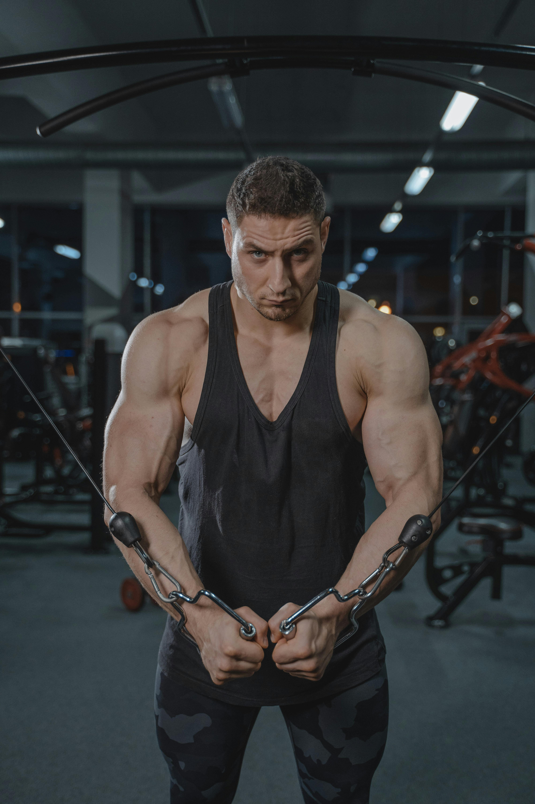

Szakmai múltam – az utam az edzői pályáig és azon túl

A sport mindig is központi szerepet játszott az életemben. Gyerekkorom óta vonzott a mozgás, a teljesítmény, a kihívás – legyen szó csapatsportokról, erőnléti edzésekről vagy saját testsúlyos gyakorlatokról. Ahogy nőttem, a mozgás szeretete egyre tudatosabbá vált bennem, és nem csupán saját fejlődésem motivált, hanem az is, hogy másoknak segíthessek elérni a céljaikat. Ebből a belső késztetésből született meg bennem a döntés, hogy hivatásos személyi edző legyek.
Tanulmányaimat a Magyar Testnevelési és Sporttudományi Egyetemen végeztem, ahol szakedzői és életmódtanácsadói képesítést szereztem. A képzés során nemcsak az emberi test működését ismertem meg mélyrehatóan – anatómia, élettan, biomechanika –, hanem azt is, hogyan lehet tudományosan megalapozott, mégis emberközpontú módon támogatni valakit az életmódváltásban vagy akár a csúcsteljesítmény elérésében.
A diploma megszerzése után sem álltam meg a tanulásban. Számos hazai és nemzetközi tanfolyamon vettem részt, többek között:
- NASM Certified Personal Trainer (USA)
- Precision Nutrition – Táplálkozási tanácsadó
- Funkcionális tréningek, TRX, mobilitásfejlesztés és stretching tanfolyamok
- Korrektív tréning és rehabilitációs mozgásprogramok
Az elmúlt több mint 10 évben dolgoztam:
- teljesen kezdőkkel, akik életükben először léptek be edzőterembe,
- elfoglalt irodistákkal, akik ülőmunka mellett kerestek egészségesebb egyensúlyt,
- szülés után visszatérő hölgyekkel,
- 50 év feletti vendégekkel, akik újra aktív életet akartak élni,
- hobbi testépítőkkel, akik formát akartak hozni,
- versenyre készülő sportolókkal, akik az utolsó %-ot akarták kihozni magukból.

Hiszem, hogy minden ember útja egyedi, ezért az edzéseimben nincs sablon. Mindenkivel személyesen beszélgetek az első alkalommal: feltérképezzük a kiindulási állapotot, a célokat, az akadályokat, a szokásokat. Ez alapján állítom össze az edzéstervet, táplálkozási irányelveket, és ha kell – a mentális támogatást is.
Számomra az edzői munka nem csak gyakorlatok sorozata vagy kalóriák számolgatása. Ez egy kapcsolat, egy kísérés, egy közös út. A célom, hogy vendégeim ne csak jobban nézzenek ki, hanem jobban is érezzék magukat – testileg, lelkileg, mentálisan. Legyen szó néhány kiló leadásáról vagy egy maraton lefutásáról, én ott vagyok, és segítek végigmenni az úton.
Elérhetőségek
Vedd fel velem a kapcsolatot, ha bármi kérdésed van!!
3525 Miskolc, Kitalált utca 12.
+36 30 123 4567
fodorgabor@fitnesz.hu